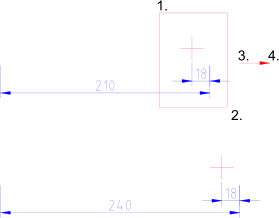

Strecken
Werkzeugleiste / Symbol:
 Menü: Modifizieren - Strecken
Tastenkürzel: S, S
Kommandos: stretch | ss
Menü: Modifizieren - Strecken
Tastenkürzel: S, S
Kommandos: stretch | ss
Beschreibung:
Streckt Konturen. Dies kann auch als Verschiebung aller Endpunkte in einem
rechteckigen Bereich beschrieben werden.

Vorgehensweise:
- Bestimmen Sie die erste Ecke des zu streckenden Bereichs mit der
Maus.
- Bestimmen Sie die zweite Ecke des zu streckenden Bereichs.
- Bestimmen Sie den Referenzpunkt für die Verschiebung mit der Maus oder
indem Sie eine Koordinate in die Kommandozeile eingeben.
- Bestimmen Sie den Zielpunkt.